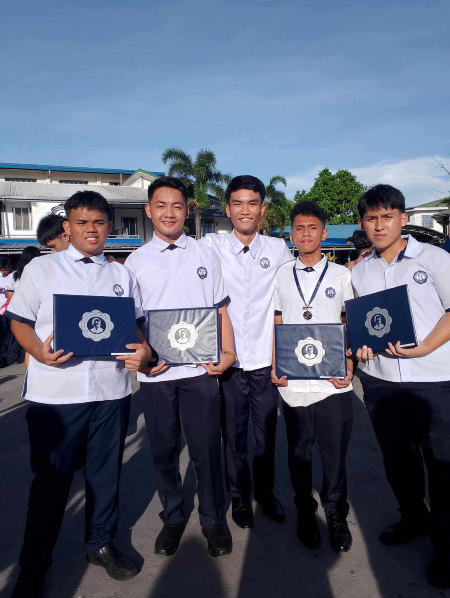
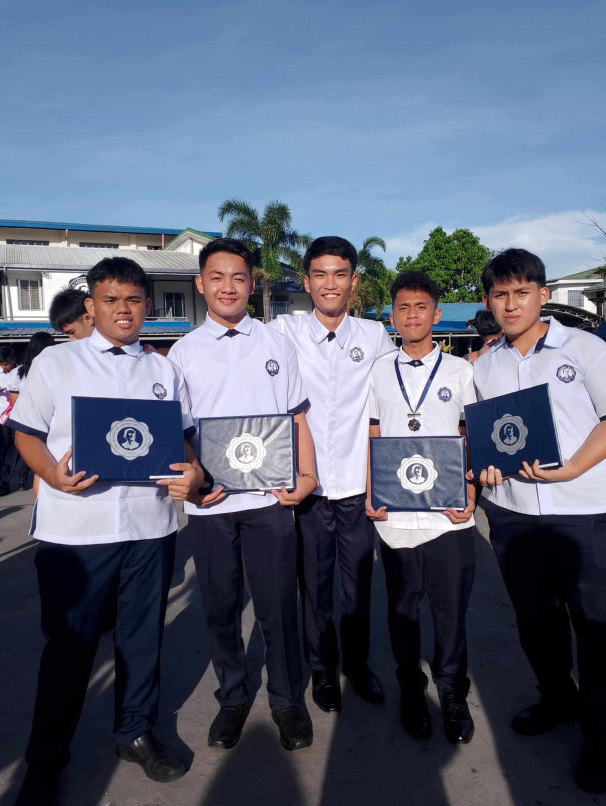

John Elic G. Maralit
Age: 18 • Grade: BSCS 1-H • School: Kolehiyo ng Lungsod ng Lipa
Hi! I’m Elic. I enjoy technology, programming, fitness, and exploring new skills. Welcome to my personal website!
- Passionate about technology and programming.
- Love joining school activities and collaborating with peers.
- Strive to contribute to the community and help others.
Family Members
- Brother: Joemarie G. Maralit
- Mother: Berndatte G. Maralit
- Father: Enrique A. Maralit
- Sister: Marjorie M. Dela Peña
Family Photos


Description
- Attended Mass unexpectedly, which became a blessed family moment.
- Strengthened family bonds and spiritual connection.
- Created a beautiful memory of togetherness and gratitude.
Friends
 


Description
- Gym buddies who became true friends over time.
- They push me to improve physically and guide me in life.
- Supportive, encouraging, and always ready to help me grow.
Hobbies & Activities


Description
- Gym: Strengthens body, improves discipline, motivates daily.
- Online Games: Helps relieve stress and feel accomplished.
- Coffee while studying: Keeps me focused and productive.